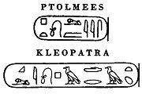
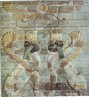
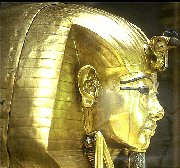
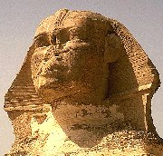
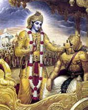
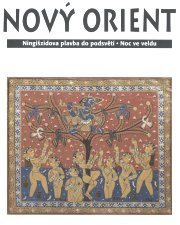
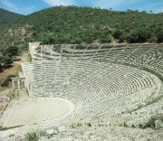
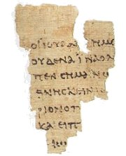
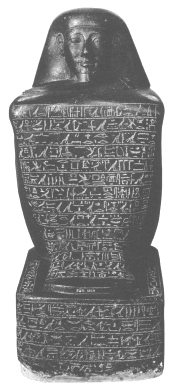

Obsah
Egypt
Mezopotámie
Indie
Čína
Tibet
Japonsko
Orientální divadlo
Persie (Írán)
Řecko
Řím
Antické divadlo
Bible
+ Arabské písemnictví

|
STAROVĚKÉ PÍSEMNICTVÍ
Slovem literatura dnes označujeme hlavně texty umělecké (beletrii), a proto se tento výraz pro nejstarší texty příliš nehodí. Řada z nich totiž ve skutečnosti plnila jinou funkci (náboženskou, naučnou, správní atd.) a byla psána s jiným záměrem. Slovo písemnictví je pro období starověku mnohem vhodnější. Zahrnuje totiž vše napsané. Na začátku písemnictví stojí vynález písma. Písmo vzniklo nezávisle v několika oblastech (Mezopotámie, Čína, Střední Amerika), odkud se šířilo dále a postupně se vyvíjelo až do dnešní podoby. Vynález písma dělí lidskou minulost do dvou epoch – prehistorie, kterou můžeme zkoumat pouze na základě archeologických vykopávek, a historie, kdy máme navíc dobová svědectví dochovaná v psaných textech. Pro dějepisce jsou samozřejmě nejdůležitější texty historické (seznamy panovníků, anály, kroniky, životopisy...), pro religionisty texty náboženské (posvátné knihy a jejich výklady, modlitby...) a pro literární vědce texty umělecké (básně, povídky, dramata...). Takových textů se ale dochovalo velmi málo. Navíc jde často pouze o jejich zlomky, nevíme přesně, ze které doby pocházejí, neznáme jejich autory a nevíme toho mnoho ani o období, kdy vznikaly.
|
Periodizace
Starověk navazuje na pravěk a odlišuje se od něj především vznikem prvních státních celků (Mezopotámie, Egypt, Čína). Z hlediska literatury je pro toto období nejvýznamnějším předělem vznik písma ve 4. tis. př.n.l. (Nejdříve v Mezopotámii, později v Egyptě, Číně a dalších oblastech.) Symbolickým koncem starověku je zánik západořímské říše v roce 476 n.l., ale můžeme ho posunout i dále (např. do roku 529 n.l., kdy císař východořímské říše Justinián nechal zavřít všechny antické školy). Odchod starověku a nástup středověku v Evropě nebyl náhlý, ale spíše postupný a shoduje se s obdobím stěhování národů (4. až 6. století n.l.), které bylo velmi neklidné.
|
Mytologie

Perský bůh Ahura Mazda se vznáší nad okřídlenými tvory s lidskou hlavou
|
Co bylo před literaturou?
Nejstarší vypravování vznikala dávno před jejich písemným zaznamenáním a před vznikem písma. Byly to především mýty. Jednotlivé starověké civilizace měly svébytný systém mýtů, který nazýváme mytologie. Tímto termínem zároveň označujeme vědu, která mýty zkoumá. Názory na funkci a vznik nejstarších mýtů se různí. Jeden z nejstarších výkladů podal Řek Euhemeros, který žil ve 3. stol. př.n.l. Podle euhemeristů je mýtus překroucené vylíčení skutečných historických událostí a bohové byli původně pouze králové nebo výjimeční hrdinové. Jiný názor tvrdí, že jde o symbolické příběhy, které nelze chápat doslovně, ale jako prostředek k vyslovení nevyslovitelného (přírodních živlů, morálních principů atd.). Z toho je jasné, že mýty nebyly jenom obyčejné příběhy. Měly velký vliv na život jednotlivce i společnosti, vznik náboženství i uměleckých děl a v nejstarších dobách přímo utvářely lidskou civilizaci. Mytologické náměty se staly základem pro vznik prvních literárních textů (např. starověkých eposů nebo antických dramat).
|
Poznámka: Své mýty měly nejen starověké civilizace, ale i pozdější národy (Germáni, Slované, Mayové...) Tyto mytologie zahrnují tisíce bohů, polobohů, hrdinů, nadpřirozených bytostí a příběhů o nich. Téma je tedy tak široké, že zcela přesahuje rámec i možnosti této učebnice. A protože mytologie tu byla před literaturou, nebudeme se jí v této učebnici podrobněji věnovat. Starověké mýty ale rozhodně stojí za přečtení! |
Zapomenuté civilizace

Tutanchamonův sarkofág
|
Počátky starověkého písemnictví
Nejstarší písemné památky pocházejí ze 4. tisíciletí př.n.l. a byly nalezeny na území starověké Mezopotámie a Egypta. Tyto starověké civilizace byly na velmi vysoké úrovni, ale to nezabránilo jejich zániku. Písmo (a s ním i celá řada poznatků v něm uložených) bylo na konci starověku zapomenuto a lidé museli čekat až do 19. století, kdy díky archeologům a jazykovědcům znovu vydalo svá tajemství. Mezopotamské klínové písmo i egyptské hieroglyfy byly nakonec rozluštěny, ale stále zbývají písma, která číst neumíme – lineární písmo A nalezené na Krétě, písmo z Velikonočních ostrovů a další.
|

Sfinga
|
Východní kultura

Indický bůh Kršna promlouvá k Ardžunovi
|
Orientální písemnictví
Orientální písemnictví se s písemnictvím starověkým částečně překrývá. Na rozdíl od starověku ale Orient není historickou epochou, je to určitá zeměpisná oblast, která se rozkládá jihovýchodně od Evropy. Mezi orientální kraje tedy patří především Asie (Indie, Čína, Tibet, Japonsko...), ale také Blízký východ (Izrael, arabské státy) a Afrika. V celé řadě orientálních zemí se začalo rozvíjet písemnictví už v době starověku. Na rozdíl od hlavních starověkých civilizací (Mezopotámie, Egypt) nebyla zdejší kultura na dlouhý čas zapomenuta a vyvíjí se bez přerušení až do současnosti. Protože vývoj v těchto oblastech probíhal jinak než v Evropě, je velmi těžké určit, kdy v daných státech končí starověk a začíná středověk. Na evropskou kulturu neměl Orient zásadní přímý vliv, ale to neznamená, že zde nevznikala významná umělecká díla. Právě naopak, orientální kultura nás přitahuje už svojí exotičností. Řada významných textů z této oblasti nebyla bohužel dosud přeložena do češtiny, i když v poslední době se tento dluh postupně napravuje.
|

Od roku 1947 vychází v Čechách měsíčník Nový Orient, který popularizuje nejnovější poznatky z minulosti i současnosti této oblasti.
|
Kolébka evropské civilizace

Řecký amfiteátr v Epidauru
|
Antické písemnictví
Starověké Řecko i Řím jsou právem považovány za kolébku naší civilizace a současné evropské národy těmto antickým státům za mnohé vděčí. V antice má své hluboké kořeny nejen filozofie, divadlo, výtvarné umění, architektura nebo věda, ale především demokracie, která byla ostatním starověkým civilizacím cizí. I když se řada antických děl nezachovala, je zřejmé, že v této době vzniká literatura v pravém slova smyslu. Dokonce známe i konkrétní spisovatele a jejich osudy. Ve středověku byla sice antická tradice zpřetrhána, o to více se ale znovu projevila v renesanci a klasicismu a přetrvává až do současnosti.
|
Periodizace
Počátky řeckého písemnictví spadají do 8. století př.n.l.
Ve 4. století př.n.l. dobyla Řecko a další kraje ve Středomoří Makedonie (tzv. helénismus trval až do 1. stol. př.n.l.).
Nakonec velkou část Evropy, sever Afriky a západ Asie získala římská říše, jejíž západní polovina zanikla v roce 476 n.l.
|
Posvátné texty

|
Náboženské texty
Některé texty měly v daných civilizacích výlučné postavení, byly totiž považovány za posvátné. Lidé věřili, že jejich autorem je přímo bůh nebo že jsou božského původu. Tyto památky se staly základem významných světových náboženství – buddhismu (Tři koše), hinduismu (Bhagavadgíta), židovského náboženství (Tóra), křesťanství (Bible) a islámu (Korán) nebo náboženství okrajových – lámaismu (Tibetská kniha mrtvých), zoroastrismu (perská Avesta) atd. Přestože se na ně můžeme dívat i z hlediska literárního, musíme mít vždy na paměti, že vznikaly ze zcela jiných důvodů!
|
Poznámka: Vzhledem k tomu, že počátek islámu je kladen až do roku 622 n.l., mohli bychom ho zařadit do písemnictví středověkého, tím bychom ale opomněli zřejmé shody Koránu s Biblí a arabské kultury s orientální.
|
Internetové stránky
Encyclopaedia of the Orient
Starověk na Seznamu, odkazy
Výběrová bibliografie o současných světových náboženstvích
Starověká písma
Origins of Writing, historie
Encyklopedie náboženství
Citáty, řecké a latinské
Exotic art, galerie
Exkurze
Orientální ústav AV ČR
Ústav Blízkého Východu a Afriky FF UK
Zámek Zbraslav, asijské umění
Zámek Liběchov, orientální expozice
Tipy
V české edici Antická knihovna vyšly desítky překladů antických knih a členské prémie Čtení o antice.
Karel Čapek sbíral nahrávky etnické, exotické a orientální hudby (vyšlo na 5 CD).
|
Doporučená četba
Archív orientální (časopis)
Ceram, C. W.: Bohové, hroby a učenci, přel. V.Zamarovský, Orbis, Praha 1975
Dějiny pravěku a starověku (2 svazky), Státní pedagogické nakladatelství, Praha 1975
Dorazil, Otakar: Poklady starověkého písemnictví
Dumézil, G.: Mýtus a epos, přel. J.Našinec, Praha 2001
Eliade, Mircea: Dějiny náboženského myšlení (3 svazky), Oikoymenh, Praha 1995
Encyklopedie antiky, Academia, Praha 1973
Hroch, Skýbová: Králové, kacíři, inkvizitoři, Československý spisovatel, Praha 1987
Jean, Georges: Písmo, paměť lidstva, přel. H.Tomková, Slovart, 1994
Kulturní tradice Dálného východu, Odeon, Praha 1980
Machovec, D.: Antická filozofie, Praha 1993
Nový Orient (časopis)
Petiška, Eduard: Příběhy, na které svítilo slunce (Egypt, Mezopotámie, Starý zákon)
Pijoan, José: Dějiny umění, 1. až 4. díl
Průšek, J. a kol: Slovník spisovatelů Asie a Afriky (2 svazky), Praha 1967
Puhvel, Jaan: Srovnávací mytologie, přel. V.Pelíšek, NLN, Praha 1997
Slovník antické kultury, Svoboda, Praha 1974
Slovník řecko-římské mytologie a kultury, přel. V.Hrubanová a kol., Ewa edition, Praha 1993
Swiderková, Anna: Tvář helénistického světa, přel. J.Vlášek, Panorama, Praha 1983
Zamarovský, Vojtěch: Bohové a hrdinové antických bájí, Praha 1970
|
Připrav si referát o některé z uvedených knih nebo internetových stránek.

Egyptská socha s nápisy
|
|